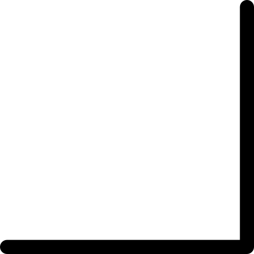
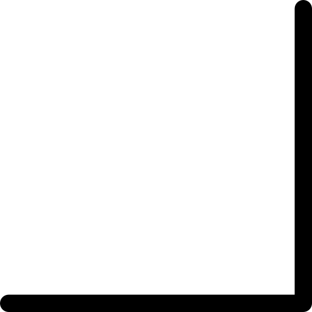

viabilidad
Viabilidad económica se requerirá una inversión inicial para el desarrollo del aplicativo web y la infraestructura necesaria los ingresos podrían provenir de tarifas por servicios para pacientes y acuerdos con aseguradoras médicas si es aplicable es necesario realizar un análisis financiero detallado para determinar el punto de equilibrio y la rentabilidad del proyecto beneficios mayor comodidad para los pacientes al permitir gestionar citas en línea mayor eficiencia para la para el personal administrativo al reducir la carga de trabajo manual mayor organización y seguimiento de las citas médicas potencial para ofrecer un servicio más rápido y personalizado a los pacientes aspectos legales y éticos es esencial cumplir con todas las regulaciones y leyes de protección de datos y privacidad de la información médica la seguridad de los datos debe garantizarse para proteger la confidencialidad de los pacientes en resumen la creación de este aplicativo web para gestionar citas médicas en la fundación arcángel es una opción viable que puede aportar numerosos beneficios tanto a los pacientes como el personal administrativo sin embargo antes de iniciar el proyecto es crucial llevar a cabo un estudio de viabilidad más detallado y consultar a expertos en desarrollo web y regulaciones médicas
Marco Teorico
El desarrollo del aplicativo web para la gestión de citas médicas en la Fundación Arcángeles se fundamenta en los siguientes conceptos:
1. Antecedentes de la investigación:
Las personas con discapacidad en Colombia representan una minoría con múltiples obstáculos sociales, administrativos, tecnológicos, económicos, físicos, entre otros, cada uno con gran importancia para el desarrollo integral. Las barreras de acceso persisten, problemas como la accesibilidad y disponibilidad, impiden mejorar la calidad de vida y la integración plena a la sociedad, convirtiéndose en discriminatoria en este grupo minoritario, de modo que no pueden gozar a plenitud del derecho fundamental a la salud. A su vez pierden la oportunidad de generar un gran aporte productivo y social a la comunidad a través de la Tecnología. si bien cierto La discapacidad es un concepto que evoluciona y que resulta de la interacción entre las personas con deficiencias y barreras debidas a la actitud y al entorno que evitan su participación plena y efectiva en la sociedad, en igualdad de condiciones con los demás (Organización de Naciones Unidas, 2006). Gracias a los avances Tecnológicos estas discapacidades físicas son cada vez menos discriminatorias y han generado un nicho de negocio donde las grandes empresas han empezado a generar más oportunidad laboral a personas con discapacidad. Las ayudas para la movilidad, como sillas de ruedas, sillas de ruedas motorizadas, andadores, bastones, muletas1 , dispositivos de prótesis y dispositivos ortopédicos.
2. Bases teoricas
Aunque la mayoría de las personas con discapacidad no son ni se sienten enfermas y deben ser atendidas en los sistemas normalizados e integrados de atención en la salud, como el resto de los ciudadanos, muchas de ellas necesitan una atención más frecuente e intensa que el resto de la población, por presentar mayor prevalencia de determinadas enfermedades. Dicho esto, las entidades de salud deben velar por la oportunidad a los pacientes que presentan estas condiciones, por eso atreves del software que se implementara en la fundación Arcángeles se quiere agilizar el agendamiento de citas y seguimiento a pacientes con discapacidad, evitando el desplazamiento, los largos tiempos de espera en la fundación, mejorando en parte la calidad de vida de los pacientes.
3. Avance tecnológico en el sector salud
El acceso a la plataforma es web, lo que significa una conectividad desde cualquier dispositivo móvil o de escritorio, La plataforma tendrá una interface amigable, dinámica, intuitiva en su manejo, la estructura se desarrollará sobre el lenguaje HTML, CSS donde se podrá identificar la fundación y los servicios que ofrece, en un módulo aparte se dispondrá de la asignación de citas, documentación, historias clínicas, exámenes, se manejara una base de datos con encriptación de datos en MySql y servidor en AWS lo que permite que la información sea más segura y mantenga un backup en caso de ataques o caída de servicios por algún motivo esto genera un respaldo constante en la información además de que el flujo de la información sea rápida y de fácil consulta.